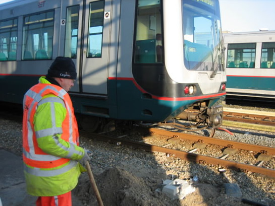
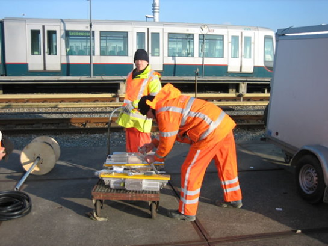
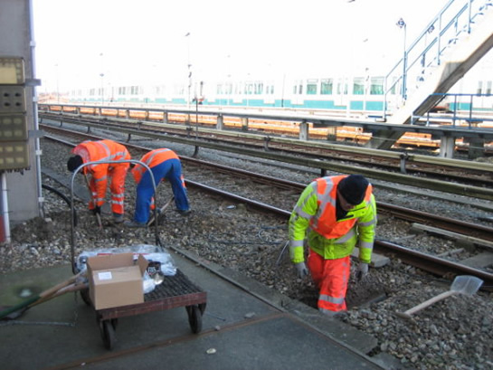
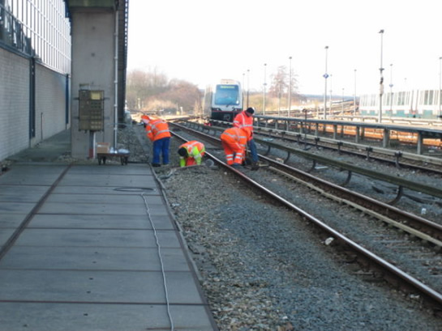
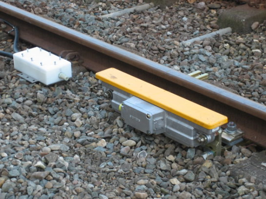
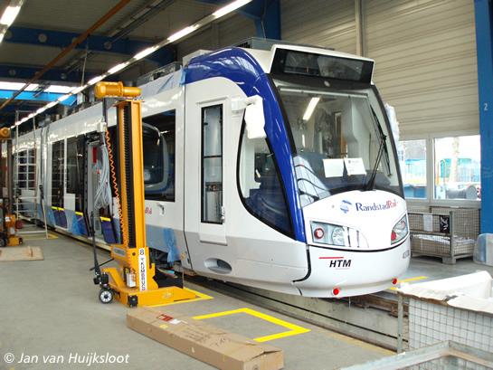

Werkzaamheden testspoor Waalhaven gestart en ander nieuws...
- vrijdag 05 december 2008 16:42
- Geschreven door Joachim
Op het emplacement van lijnwerkplaats Waalhaven is gestart met het installeren van een proefopstelling voor het spoorbeveiligingssysteem "ZUB 222c" dat op het RandstadRailtracé gebruikt zal worden. In tegenstelling tot eerdere berichten wordt niet spoor 133, maar spoor 131 voorzien van het nieuwe spoorbeveiligingsysteem, naast het normale ATB-systeem dat de RET gebruikt op het Rotterdams metronet.
Spoor 131 wordt vooralsnog uitgerust met zes baankoppelspoelen, welke telegrammen ontvangen en versturen van en naar de treinkoppelspoel, waarmee het sneltramrijtuig is uitgerust. Daarnaast wordt er naast het spoor een lichtsein geplaatst. De werkzaamheden worden uitgevoerd door Cegelec in opdracht van Siemens.
Het testspoor zal gebruikt worden voor het testen van de nieuwe ZUB-treinapparatuur, waarmee de rijtuigen 5261 t/m 5271 uitgerust worden. Deze rijtuigen worden vanaf de zomer van 2006 ingezet op het RandstadRailtracé tussen Rotterdam Hofplein en Den Haag Centraal.
Foto's met dank aan  Jeepie.nl
Jeepie.nl

Voorbereidende werkzaamheden voor het plaatsen van de baankoppelspoel. Een metrorijtuig van de 5300-serie passeert op spoor 131.

De baankoppelspoelen worden uitgepakt. In totaal worden er zes baankoppelspoelen geplaatst, waarvan drie in elke richting.

Voordat de baankoppelspoelen geplaatst worden, wordt de bekabeling in orde gebracht.

Een overzichtsfoto van spoor 131. Bekijk ook het Sporenplan / gebied Waalhaven.

De uiteindelijk geplaatste baankoppelspoel, welke optisch niet veel verschilt van de treinkoppelspoel.
Revisie 5264
De technische revisie van rijtuig 5264 is bijna voltooid. Begin volgende week zal de revisie van het rijtuig, deels getooid in de RandstadRail-kleuren, afgerond zijn. Nog één rijtuig zal de technische revisie ondergaan. Wanneer ook deze revisie afgerond is, zijn alle elf rijtuigen (5261 t/m 5271) die dienst gaan doen op het RandstadRail-tracé technisch gezien gereviseerd.
Rijtuig 5348
Het transport van rijtuig 5348, dat vannacht zou plaatsvinden, is halverwege gestrand. Dit als gevolg van luchtlekkage in de luchtleiding van het metrorijtuig. Het rijtuig is in afwachting van een verder transport opgesteld op het NS-emplacement Rotterdam Noord Goederen.
Roltrappen
Naast de vervanging van de roltrappen op de stations Slinge, Rhoon, Poortugaal, Hoogvliet en Zalmplaat, wordt ook de roltrap op station Spijkenisse Centrum, langs de kant van spoor 1, vervangen. De roltrap was met enige regelmaat buiten gebruik. Reizigers kunnen enige hinder ondervinden van de vervanging.
Openbaar Vervoer Museum heropend
Op vrijdagmiddag 17 februari werd het Openbaar Vervoer Museum in metrostation Oostplein heropend. Het museum is drie jaar gesloten geweest, mede door een verbouwing. De opening werd bijgewoond door algemeen directeur RET Pedro Peters, en de directeur van Alstom, Linders. De bijeenkomst werd bijgewoond door ongeveer honderd genodigden. Het museum biedt naast een RET-collectie, ook schaalmodellen van de Nederlandse Spoorwegen. De zichtbare collectie zal met enige regelmaat wisselen. Het Openbaar Vervoer Museum is geopend op zaterdag en zondag van 11.00 uur tot 17.00 uur.
Werkgroep Metro
Binnen de Stichting RoMeO, de stichting welke het historisch Rotterdams openbaar vervoer beheert en exploiteert, is op 15 februari de werkgroep Metro opgericht. De werkgroep heeft als doel het restaureren en tentoonstellen van onder meer metrorijtuig 5024. Dit is een van de metrorijtuigen van de eerste serie metrorijtuigen die in 1968 in dienst gingen op het toenmalige tracé Centraal Station - Zuidplein v.v. De werkgroep zoekt nog vrijwilligers. Aanmelden kan middels het sturen van een e-mail naar
Dit e-mailadres wordt beveiligd tegen spambots. JavaScript dient ingeschakeld te zijn om het te bekijken.
.
Nieuwe RandstadRail-voertuigen voor Den Haag
Vandaag wordt in de loop van de dag het eerste nieuwe RandstadRail-voertuig, welke dienst gaat doen op de RandstadRail-lijnen van Den Haag en Zoetermeer, in Den Haag verwacht. Sneltramstel 4002 zal als eerste geplaatst worden in de nieuw gerealiseerde remisehal Zichtenburg, van Haags vervoerder HTM. De nieuwe sneltramstellen zijn gebouwd door Alstom in Salzgitter. In totaal zullen er vijftig tweerichtingsvoertuigen geleverd worden (4001-4050)

Voertuig 4003 in de fabriek van Alstom in Salzgitter (foto: Jan van Huijksloot).